Samuel Lucas de Araujo Farias
Educação
- Ciência da Computação - Universidade de Fortaleza (UNIFOR)
Abril de 2022 - Junho de 2026 - Especialização Back-end em Java - Oracle Next Education
Junho de 2024 - Janeiro de 2025
Principais experiências anteriores
-
Estagiário de TI - R. Amaral Advogados (Abril de 2024 - Agosto de 2024)
- Prestação de suporte técnico (help desk) para manutenção de software e infraestrutura.
- Desenvolvimento de soluções de automação de processos.
- Criação de relatórios em ferramentas de Business Intelligence (B.I).
- Auditoria e gestão de bens tecnológicos do escritório.
-
Auxiliar de Inovação e Tecnologia - Escola Municipal Angélica Gurgel (Janeiro de 2024 - Abril de 2024)
- Manutenção e gestão da Sala Google para atividades pedagógicas.
- Apoio ao corpo docente no planejamento e execução de projetos inovadores.
- Suporte técnico em equipamentos tecnológicos.
-
Monitor de Desenvolvimento de Plataformas Móveis - Universidade de Fortaleza (UNIFOR) (Janeiro de 2024 - Julho de 2024)
- Auxílio acadêmico a estudantes na disciplina de Desenvolvimento de Plataformas Móveis.
- Suporte na resolução de dúvidas relacionadas ao conteúdo técnico da disciplina.
Habilidades e competências complementares
Linguagens e tecnologias:
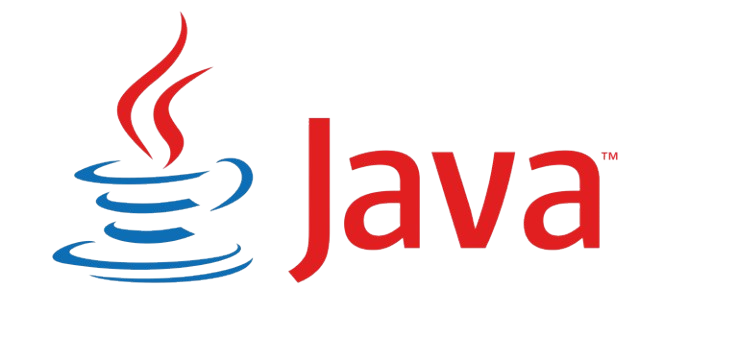
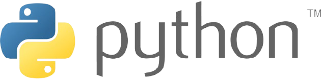
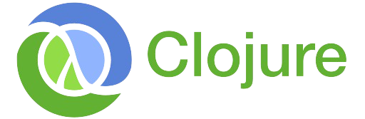


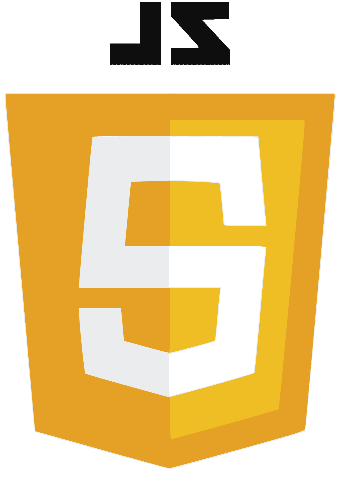
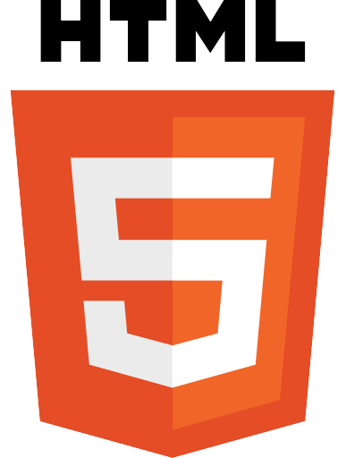

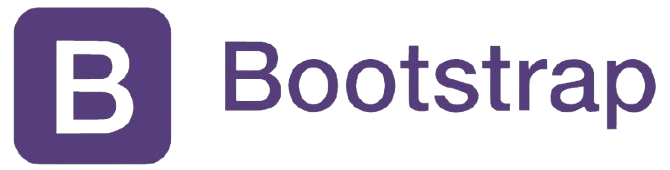
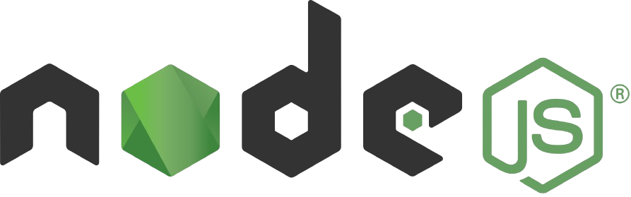
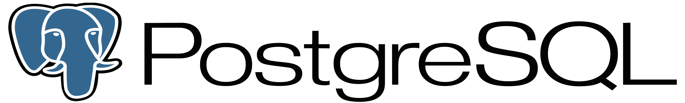

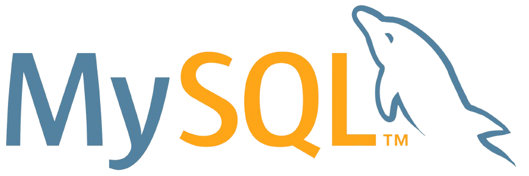
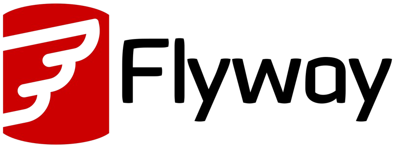

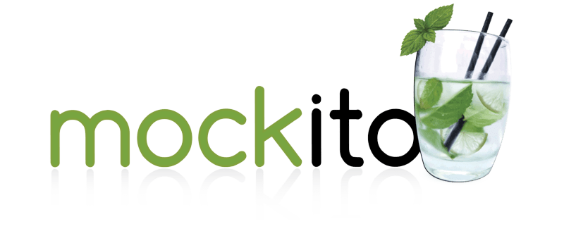
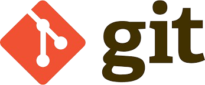
- Conceitos avançados:
- Desenvolvimento Back-End e APIs RESTful com Java
- Desenvolvimento WEB e mobile
- Modelagem e implementação de banco de dados relacionais
- Idiomas:
- Inglês: Avançado (C1)
- Coreano: Intermediário
- Espanhol e italiano: Básico
Cursos complementares
- Formação Desenvolvimento Pessoal: foco, hábitos e carreira - Alura, 2024
- Flutter & Dart - The Complete Guide - Udemy, 2023
- CS50: Introduction to Computer Science - Harvard University via edX, 2022
- Python e Data Science Operacional - Instituição Black Flag, 2022
- Implementação de Banco de Dados - Fundação Bradesco, 2022
- Fundamentos de T.I: Hardware e Software - Fundação Bradesco, 2022
Fortaleza, Dezembro de 2024